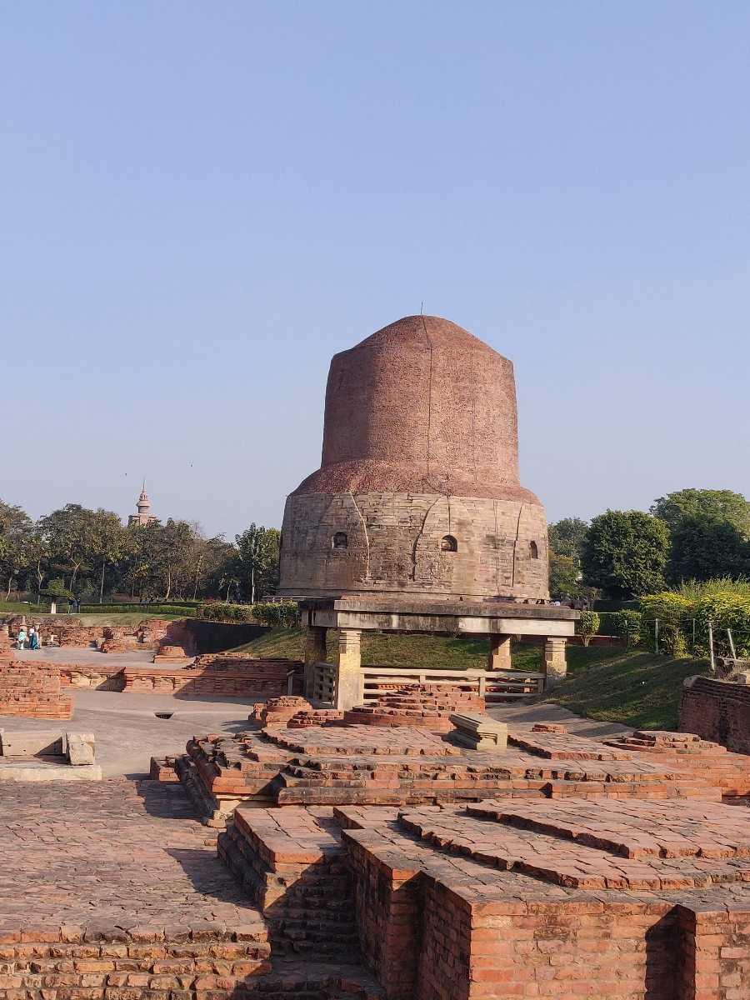
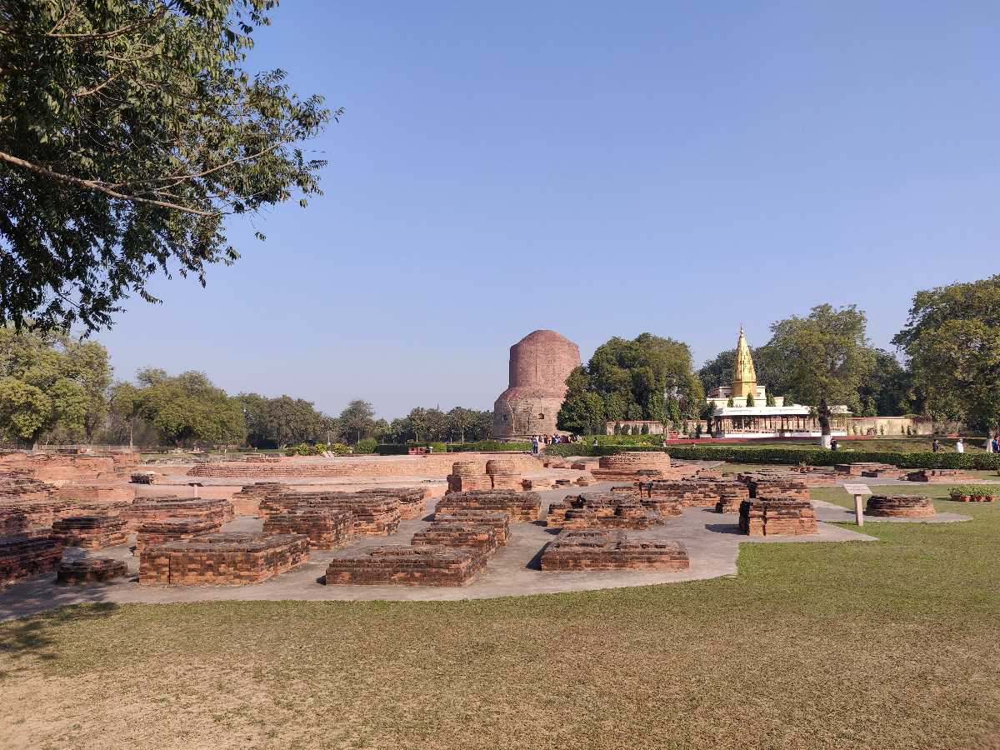
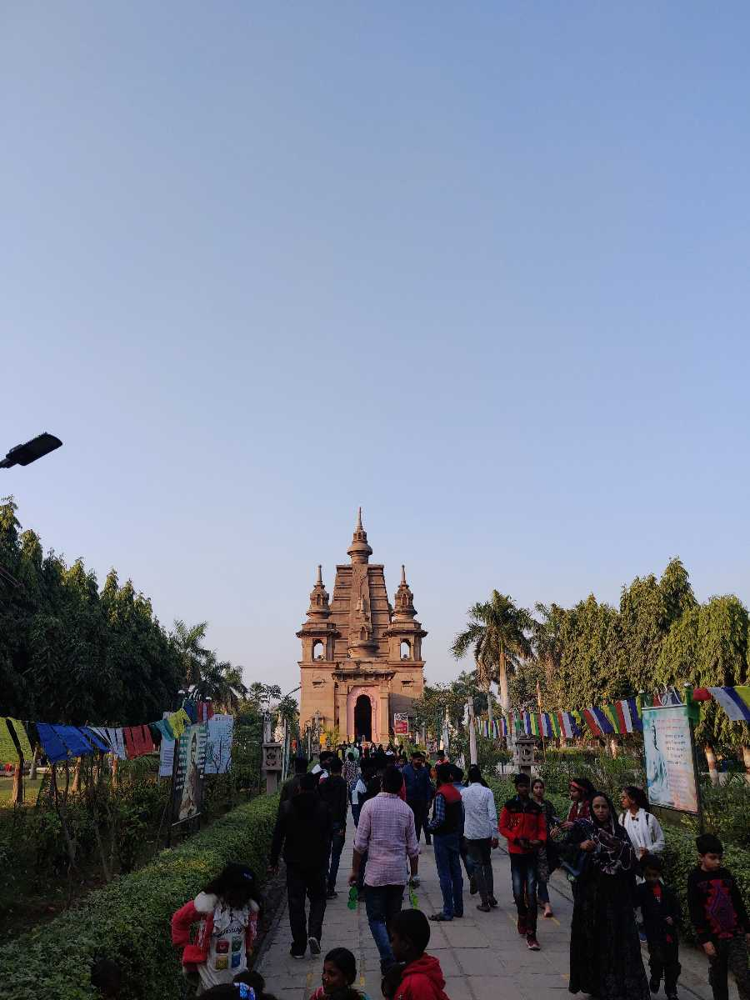
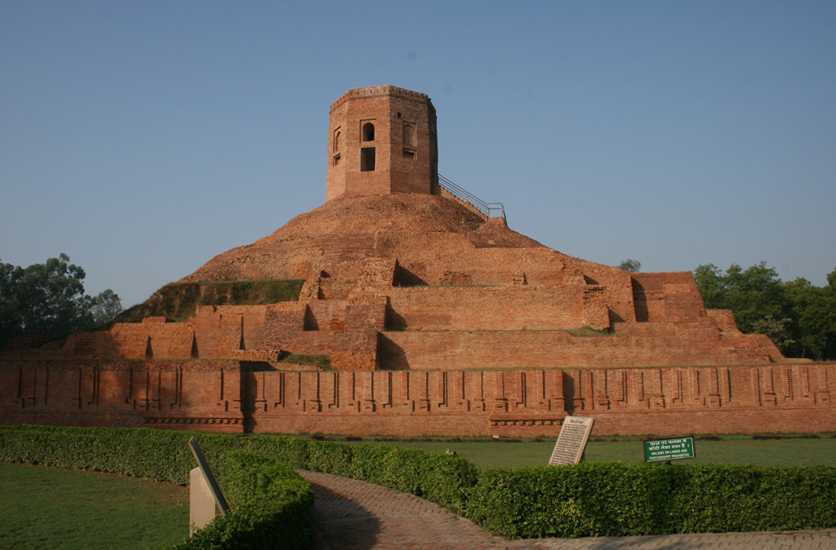
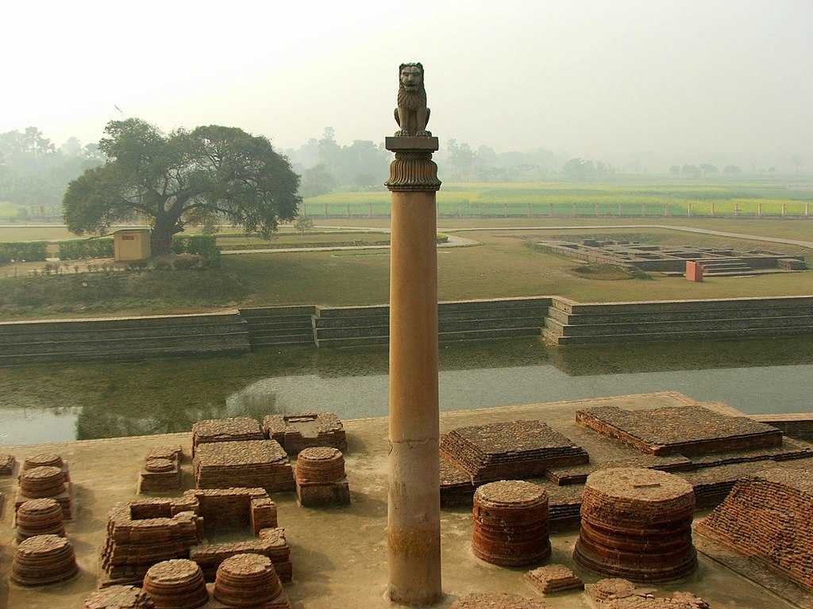
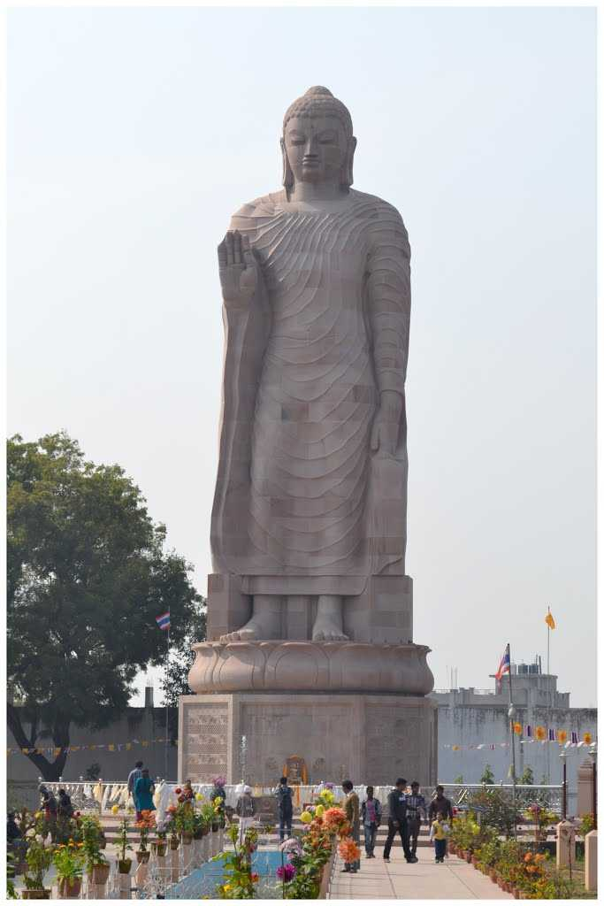
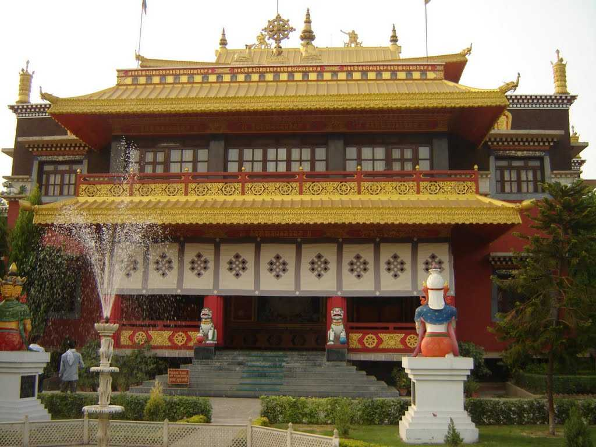
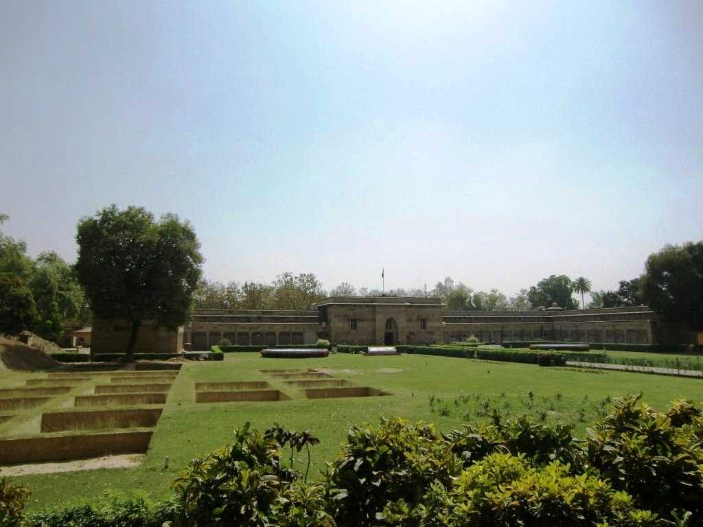
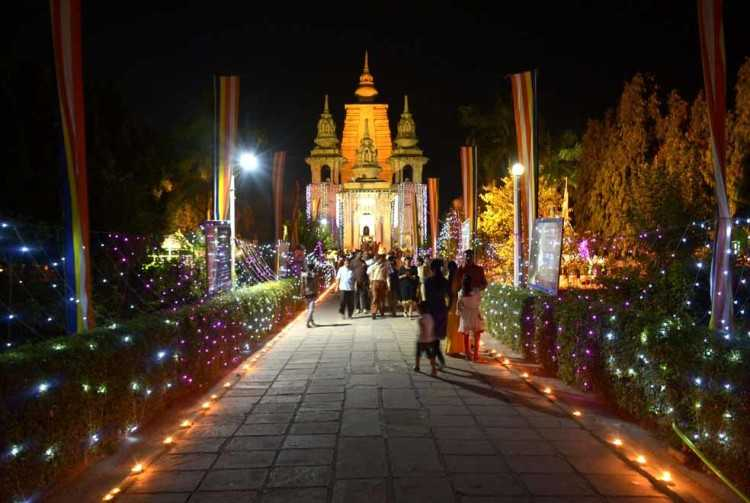

History of Sarnath
Sarnath, located near Varanasi, is a significant Buddhist pilgrimage site. It is where Lord Buddha preached his first sermon after attaining enlightenment. Sarnath holds historical and spiritual importance, attracting pilgrims and tourists alike.
Location: Sarnath, Varanasi, Uttar Pradesh, India
Famous Places of Sarnath
Dhamek Stupa
The Dhamek Stupa is a massive stupa located in Sarnath. It marks the spot where Lord Buddha gave his first sermon. The stupa is an architectural marvel with intricate carvings.
Sarnath Archaeological Site
The Sarnath Archaeological Site is a treasure trove of ancient ruins and artifacts. It provides insights into the rich history and cultural heritage of Sarnath.
The Mahabodhi Society Temple
The Mahabodhi Society Temple in Sarnath is dedicated to the enlightenment of Lord Buddha. It serves as a center for meditation and spiritual activities.
Chaukhandi Stupa
The Chaukhandi Stupa is an ancient Buddhist stupa in Sarnath. It is believed to mark the spot where Lord Buddha met his first disciples.
Ashoka Pillar
The Ashoka Pillar in Sarnath is an iconic monument with a capital featuring four lions. It was erected by Emperor Ashoka and symbolizes the spread of Buddhism.
Thai Temple
The Thai Temple in Sarnath reflects the cultural exchange between India and Thailand. It is a place of worship and cultural significance for the Thai community.
Tibetan Temple
The Tibetan Temple in Sarnath is a serene place of worship for the Tibetan Buddhist community. It features traditional Tibetan architecture and religious practices.
Archaeological Museum
The Archaeological Museum in Sarnath houses a remarkable collection of artifacts from the ancient period. It offers a glimpse into the artistic and cultural heritage of the region.
Buddha Purnima in Sarnath
Sarnath celebrates Buddha Purnima with great fervor. Pilgrims and visitors gather to commemorate the birth, enlightenment, and death of Lord Buddha.
